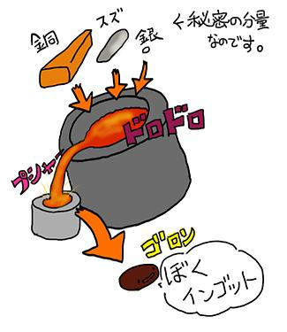

twitter からシンバルの材に関するあれこれ。
シンバルの工場見学動画なんだけど、約10分の動画中のなんと約7分20秒まで材のブロンズの板をつくるところに費してるwww
【ジルジャン工場レポ製作中】シンバルの材料を溶かして原材料の塊「インゴット」を作る秘密の部屋の中は見せてもらえませんでしたよ。 http://twitpic.com/azcwoy

@OrzBruford ブロンズの板のことをインゴットというらしいですぜ。 2012.09.29 18:31
@OrzBruford インゴットを作っている最中のドロドロの状態でさらにその原料を混ぜてるときにアクとりみたいなことをしてるのがおもしろい。 2012.09.29 20:34
OrzBruford ( 別名 Micky Drummer ) はインゴッドを覚えた。賢さが 1 つ増えた。
OrzBruford は PAiSTe の工場見学動画を思い出した。
PAiSTe の Factory Tour の動画だと、いきなり円盤状になったキンキラキンの円盤の状態で登場するけど、他のメーカーとは作り方が違ったりするのかな？
@OrzBruford ZBTやZXT ※1 の素材はそうやって納品されていましたよ！ 2012.09.29 18:37
@ShiraiMusic ということはZildjian一子相伝の秘密の調合とは別ラインなんでしょうか？ 2012.09.29 18:41
@OrzBruford そうですね。ZHTはハンマリング過程で合流します。ZXTやZBTは磨きで合流かな？ 2012.09.29 18:43
どうして PAiSTe の Factory Tour の動画について触れているのかというと、シライミュージックさんの blog に書かれている SABIAN のシンバルができるまでの工程とスタートが若干違うなぁと思ったからなのです。